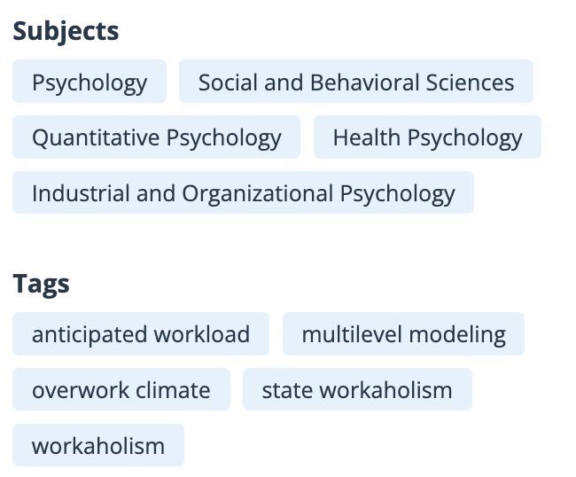
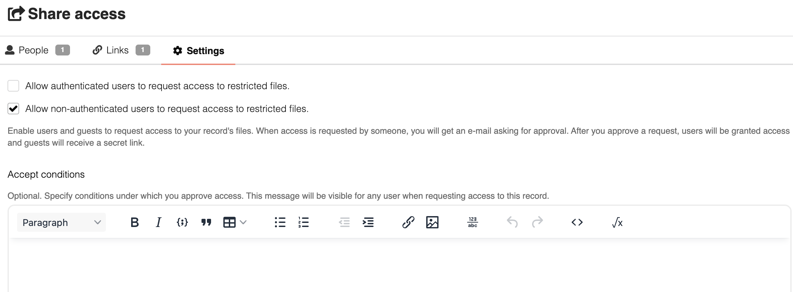
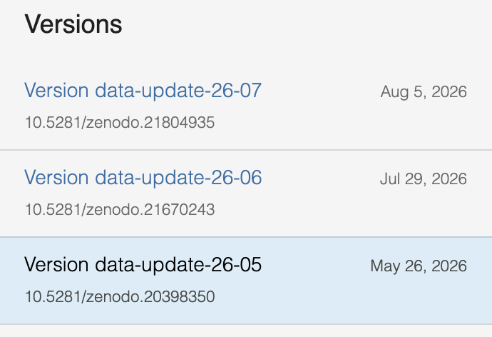

I principi FAIR
Findable, Accessible, Interoperable, Reusable
Parole chiave: FAIR findable accessible interoperable reusable trovabile accessibile interoperabile riusabile principi; DMP data management plan piano gestione Horizon Europe finanziamento template.
Come faccio in modo che questo lavoro sia utilizzabile da qualcuno che non può chiedermi niente?
Quanto siete FAIR?
Da dove vengono
I principi FAIR nascono da un articolo del 2016 su Scientific Data (Wilkinson e colleghi, 10.1038/sdata.2016.18), scritto da un gruppo eterogeneo di ricercatori, editori, enti finanziatori e informatici. L’idea di partenza è che l’enorme quantità di dati prodotti dalla ricerca resta sostanzialmente inutilizzabile, non perché sia segreta, ma perché è indescrivibile, introvabile e illeggibile per chi non l’ha prodotta.
Oggi sono il riferimento esplicito per Horizon Europe, ERC e PRIN. In Italia il MUR li ha adottati nel Piano Nazionale per la Scienza Aperta 2021-2027, dove si legge che “Occorre promuovere la gestione FAIR quale standard di riferimento nel processo di produzione dei risultati della ricerca finanziata con risorse pubbliche”.
Esiste anche una versione dei principi per il software, FAIR4RS (Barker et al., 2022): identificatore e versione, dipendenze dichiarate, licenza, istruzioni per eseguirlo.
I principi
F — Findable
Il repository alla pubblicazione assegna un DOI (per esempio 10.5281/zenodo.XXXXXXX), lo riporta nei metadati come identificatore del deposito, ed espone i metadati agli aggregatori (via OAI-PMH, raccolti e indicizzati da OpenAIRE).
Noi, in aggiunta, possiamo compilare metadati ricchi al caricamento: titolo, autori con ORCID, descrizione e parole chiave (per esempio “Stroop”, “cognitive control”). Più il deposito è descritto, più è trovabile.

A — Accessible: E’ possibile ottenere i dati? Se sì, come?
Dal DOI si arriva ai file con un qualunque browser via HTTPS, senza software aggiuntivo né abbonamenti; e se un deposito viene ritirato, il DOI continua a funzionare e porta a una pagina che ne indica il motivo, al posto dei file.
Noi, in aggiunta, possiamo scegliere il livello di accesso. Se i dati sono sensibili si caricano con accesso restricted: la scheda descrittiva e il DOI restano pubblici, mentre i file sono accessibili solo alle persone approvate da chi ha depositato. L’accesso può essere limitato, purché la procedura per richiederlo sia pubblica.

I — Interoperable
Salvare i dati in formati aperti (CSV invece di .xlsx). Un file che si apre solo con un programma specifico è già un ostacolo.
Dare un significato esplicito ai dati. Una tabella di soli numeri non dice cosa contiene: la colonna score un’accuratezza o il punteggio a un test. Si usa una forma strutturata, con intestazioni chiare, leggibile da persone e macchine. Usare i termini di un vocabolario condiviso invece di sigle inventate.
Collegare i file fra loro con relazioni dal nome preciso.

R — Reusable
Documentare. Un README che descrive lo studio e un data dictionary con una riga per ogni colonna dei dati.
Dichiarare la licenza. In assenza di licenza valgono tutti i diritti riservati, e nessuno può riusare legalmente i dati.
Indicare la provenienza nel README: come sono stati raccolti e trattati i dati (e.g., “raccolti in laboratorio fra marzo e luglio 2025”).
Seguire gli standard della disciplina, se esistono: BIDS per il neuroimaging, Psych-DS per i dati comportamentali, DDI per i questionari nelle scienze sociali. Se non esistono, si usano gli stessi nomi, formati e codifiche in tutti i file.
Data Management Plan (DMP)
Il DMP è un documento che si scrive all’inizio di un progetto e dice che dati produrrete, come li documenterete, dove li conserverete, con quale licenza e per quanto tempo. È un documento che può essere aggiornato man mano che il progetto procede, e gli scostamenti dal piano iniziale vanno documentati e motivati.
- Catalogo dei template
- Il template ufficiale di Horizon Europe
- Horizon Europe, annotato da Unipd, con spiegazioni ed esempi per ogni domanda.
- Argos (OpenAIRE), DMPonline e DMPTool: strumenti online che guidano la compilazione.